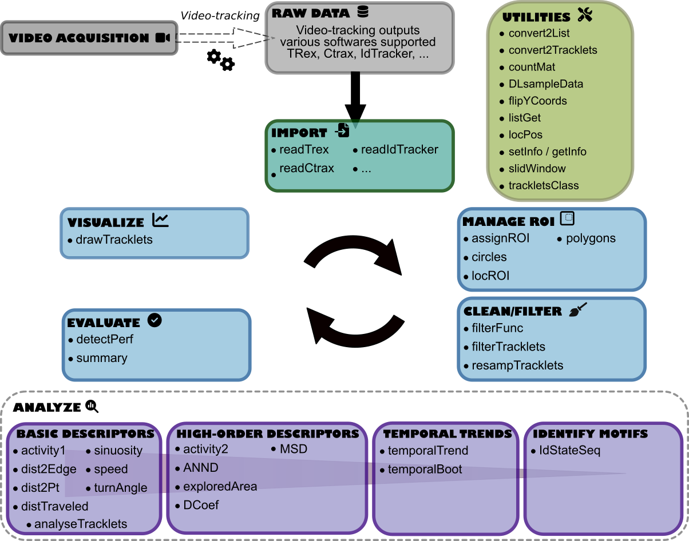

The MoveR package aims to help users analyze the output of automated video tracking solutions in a reproducible, reliable and open framework.
Dependencies
In a sack of flexibility, MoveR is mainly coded using base .
However it still relies on a few dependencies:
- graphics, grDevices and hexbin to load R functions for base graphics.
- progress to display a progress bar showing the advancement of the computations.
- reticulate and R.matlab to import Python and Matlab formatted data.
- stats to load R functions for basic calculations.
- trajr to load R functions to compute basic movement metrics (e.g., speed, sinuosity).
Installation
You can install the development version from GitHub with:
# install.packages("remotes")
remotes::install_github("qpetitjean/MoveR")Then you can attach the package MoveR:
To update with the latest version, first remove the package:
detach("package:MoveR", unload=TRUE)
remove.packages("MoveR")and repeat the above installation commands.
Overview
MoveR is an package allowing to import, clean/filter and analyze raw particles/animal movement data obtained from video-tracking softwares.
Main workflow steps
More particularly, MoveR provides tools to:
- IMPORT the raw data from various tracking software such as TRex, trackR, Ctrax and idtracker.ai (other can be easily implemented if needed).
- CLEAN/FILTER the data according to custom functions specified by the user. For instance, it can easily remove suspected tracking errors based on expected particles’ size or speed. It is also possible to sample the particles’ tracks (tracklets) according to a specified time step or remove part of the tracklets that are detected outside an arena or a given area.
- EVALUATE the quantity of data removed over the cleaning/filtering process and check the amount of true and false detection compared to manual annotations.
- VISUALIZE the tracklets of all or specified particles over time.
- ANALYSE the data over tracklets, time, or space. It is possible to compute basics metrics over each tracklet but also to conduct more advanced computation by looking for temporal and spatial trends. In a nutshell, basics metrics return the results of a given computation over each tracklet, while temporal trends functions return the results of a given calculation over time by averaging the value of each tracklet. It is also possible to compute a studentized 95% confidence interval by bootstrapping over the tracklet. Also, it is possible to extract specified spatial trends according to a given pattern set by the user.
Breakthroughs
Besides the high flexibility and unified environment, the primary innovations provided by MoveR are the possibility to:
- Characterize behavioral states (i.e., active vs. inactive states) using unsupervised learning methods (i.e., density-based clustering - see actives2 function).
- Compute the expected diffusion coefficient D, a proxy of population dispersal, assuming a correlated random walk model (from Turchin’s 1998 result; see turchinD function).
- Identify and extract arbitrary patterns, in terms of changes among behavioral states, spatial regions or areas of interest, patch crosses, or any other patterns, using a very versatile regular-expression syntax.

Citation
Please cite this package as:
PETITJEAN Quentin (2023) MoveR: An R package to ease animal movement analyses. R package version 0.0.0.9000.
Code of Conduct
Please note that the MoveR project is released with a Contributor Code of Conduct. By contributing to this project, you agree to abide by its terms.